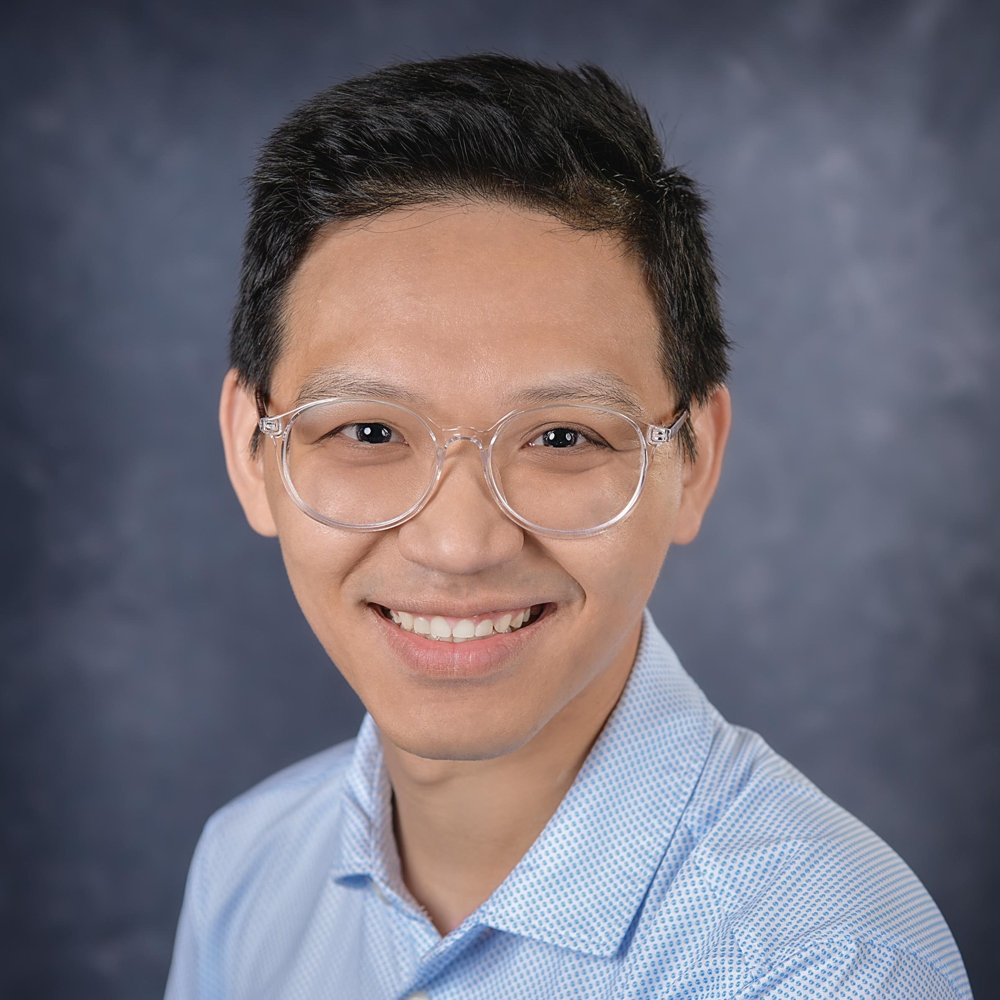

Postdoctoral Researcher in Radiology · UNC Chapel Hill
I am a postdoc in radiology/BME at UNC Chapel Hill. Since 2017, I've been working with Dr. Pew-Thian Yap on MR reconstruction, signal representation, noise removal, tractography, and microstructure imaging using diffusion MRI data with applications in neurodevelopment.
I'm especially focused on creating normative brain charts (like the height and weight charts used in pediatric care) to help spot when something's not quite right. At the heart of it, I'm driven by a simple goal: to turn brain scans into practical tools that make healthcare better.
Patterns (Cell Press), 2024
Paper PDF Code